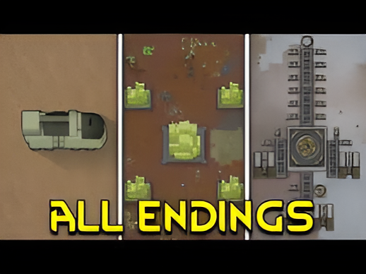
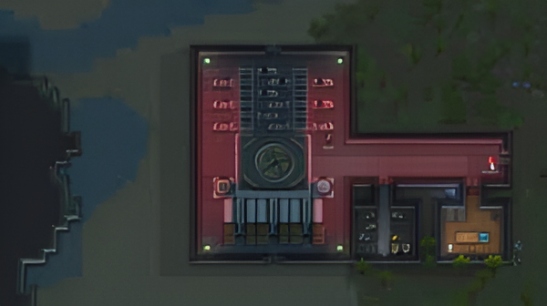
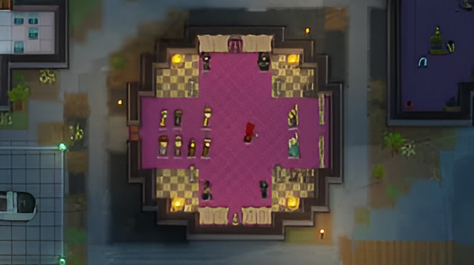
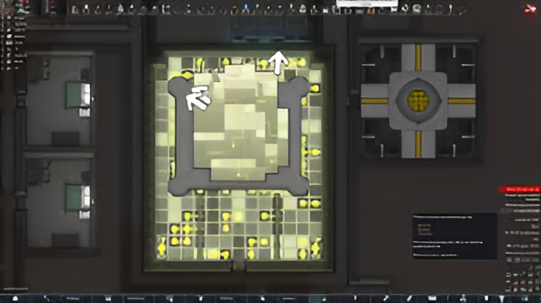

Rimworld Endings
Overview of 3 classic endings
Escape ending - The Spaceship Launch
This is the "classic" RimWorld ending. In this scenario, your colony escapes the planet by launching a spaceship. How to achieve it is either by building a spaceship yourself or find a pre-existing one on the map. Crafting a spaceship is a time-consuming and resource-intensive task. You’ll need advanced materials like Plasteel and Components, as well as a highly skilled colony. The process requires assembling multiple parts: the reactor, core, and cryosleep pods. Occasionally, a pre-existing ship appears on the map, typically defended by raiders. You must fight your way to the ship and repair it before launch. If you manage to launch the ship with your colonists in cryosleep, they escape the hostile planet. This ending is widely considered the secound "canonical" RimWorld ending, as your colonists reach safety. If the shuttle departs successfully with your colony leader and entourage, they ascend to a life of luxury and prestige within the Empire. The remaining colonists stay behind, so this ending only affects the ones who board the shuttle.
Royal Ascent - The Nobility Ending
This ending is specific to the Royalty DLC. By supporting the Empire faction and gaining noble titles, your colony leader is invited to join the Empire. Increase your relations with the Empire faction, and work your way up to the title of Count/Countess by completing quests and fulfilling the Empire's demands. Once your colony leader reaches Count status, the Empire will send a shuttle for the colony leader and entourage. You will have to protect the landing site until the shuttle arrives, which usually includes defending against waves of attackers.
Archonexus - The Transcendence Ending
This unique ending is unlocked with the Ideology DLC and revolves around the quest to attain "transcendence" through an ancient artifact known as the Archonexus. Amass enough wealth to be contacted by a mysterious faction. They will offer you an opportunity to participate in a ritual leading to transcendence. To accept, you must give up your colony, including resources and most colonists, and restart on a new map with only a few of your people. This process is repeated three times, each with higher wealth requirements. After the third map, your surviving colonists interact with the Archonexus and achieve a form of transcendence, leaving behind the physical realm.